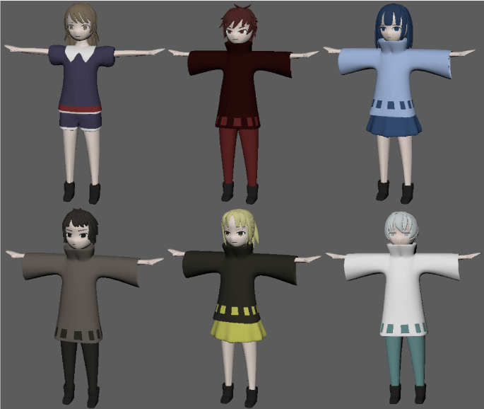

概要
モーションキャプチャーを用いたゲーム製作
期間
2019年6月14日〜7月26日 (２ヶ月間)
作品紹介
物語
見習い魔法使い(プレーヤー)が世界一の魔法使いを目指して旅に出る。
初期段階でプレーヤーは無属性の魔法が使える。
プレーヤーは各属性の魔法使いと戦い、倒すとその属性の魔法を手に入れる。
全ての属性の魔法を手に入れとゲームクリアです。
使用ツール
illustrator
maya
unity
製作過程
モーションの撮影
まずゲーム内で使うモーションの撮影をします。
部屋に12台のカメラを設置し、光が入り込まないようにします。
そして体の関節ごとに光が反射する球をつけます。
実際に動くと画面内の棒人間が人間と同じ動きをします。
キャラクターデザイン
プレイヤーと敵のキャラクターデザインをします。
それぞれどのキャラクターがどの属性かわかりやすくなるようにしています。

キャラクターに動きをつける
先ほどの動きのついた棒人間にキャラクターを肉付けします。
ゲーム製作
動きのついたキャラクターができたらunityにインポートします。
ゲームフィールドにリアルな動きをするキャラクターを配置することでまるで現実世界のように見えます。
工夫点
ゲーム内の視点を主人公の少し後ろに置くことで一人称目線になれること、かつ自分の動きも確認できて自分が戦っているように見えるようにしました。